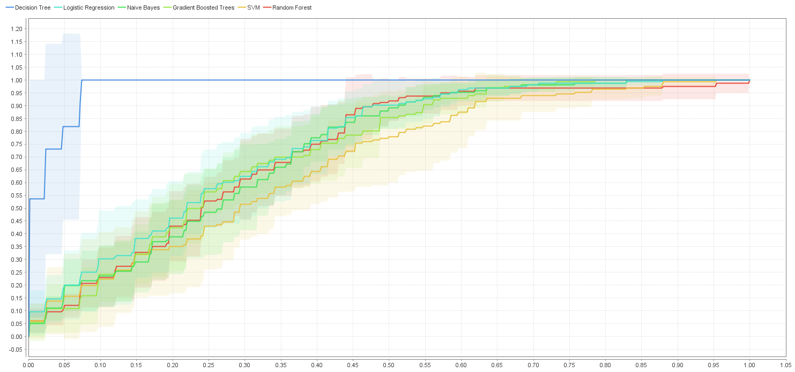
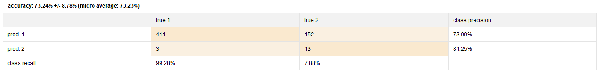
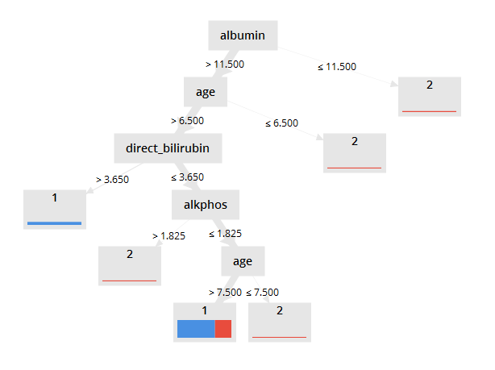

Predicción pacientes de India
Datos utilizados data set pacientes
El presente data set consta de información sobre la tenencia de hígado o no
de 583 pacientes del noreste de Andhra Pradesh, India.
Por tanto se cuenta con datos etiquetados, lo que indica que se llevará a cabo un aprendizaje supervisado.
Para lograr una mejor comprensión de los datos observamos los atributos medidos y su significado:
Atributo |
Tipo de atributo |
Rango |
|---|---|---|
| age - Edad: Edad del paciente. Se categoriza como 90 cualquier persona mayor a 90. | Numérico | 4-90 | gender - Genero: Asume los valores femenino y masculino |
Binominal | Femenino-Masculino | tot_bilirrubin - Bilirrubina total:Valores de bilirrubina total del paciente (combinación de directa e indirecta). |
Continua | 0,4-75 | direct_bilirrubin - Bilirrubina directa:Valores de bilirrubina directa del paciente. |
Continua | 0,10-19,7 | tot_proteins - Proteínas totales: Cantidad de proteínas en sangre. |
Continua | 63-2210 | albumin - Albuminas: Total de albuminas en sangre. |
Continua | 10-2000 | ag_ratio - Ratio de albuminas y globulinas: Indica el ratio entre albuminas y globulinas. |
Continua | 10-4929 | sgpt - Alanina aminotransferasa Valores de la enzima alanina aminotransferasa medidos en sangre. |
Continua | 2,7-9,6 | sgot - Aspartato aminotransferasa: Valores de la enzima medidos en sangre. |
Continua | 0,9-5,5 | alkphos - Fosfatasa alcalina: Valores de la enzima medidos en sangre. |
Continua | 0,3-2,8 |

Como se observa en esta imagen los 0 en la columna (missing) indican que sólo el atributo alkphos (Fosfatasa alcalina) tiene 4 datos faltantes. Depende del modelo a utilizar la repercusión que pueden tener los datos faltantes en el mismo.
Los árboles en general ignoran los atributos faltantes, pero cualquier algoritmo de cálculo de distancia va a presentar una performance peor.
Los rangos no denotan valores anormales (outliers) al menos se concentran alrededor de la media y los valores límites no son
de instancias únicas sino que en general se acompañan por grupos de datos.
Por otra parte este problema consta con datos etiquetados, por lo que utilizaremos un modelo supervisado de aprendizaje y la variable dependiente a explicar es categórica por tanto estamos ante un problema de clasificación.
A su vez se transforma la variable sexo para que tome valores 0 (Hombre) 1(Mujer) y la variable de salida también tomará
valores 0 y 1 en caso de no tener hígado y tener respecctivamente.
Se decide visualizar con una gráfica de ROC - Curve los algoritmos de clasificación más utilizados para evaluar su performance obteniendo:

Por tanto es posible afirmar que el árbol de decisión demuestra una buena performance en comparación al resto de los modelos analizados.
Se obtienen los parámetros ideales para aplicar el proceso con diferentes métodos de optimización,

El modelo obtiene una precisión del 73,24%, utilizando Gain Ratio como parámetro de ajuste,
con una profundidad máxima de 6 y un valor mínimo en cada hoja de 1
Aquí se observa que 411 casos cuya predicción fue Sí, efectivamente son pacientes con hígado mientras
que hay 152 pacientes que se predijo que tienen hígado pero realmente no tienen, es por esto
que el recall de clase para esa predicción es muy bajo dado que toma como clase positiva la clase 0 y no halla en realidad
todos los casos que debiera.
El árbol resultante luego de aplicar el modelo es el siguiente:
